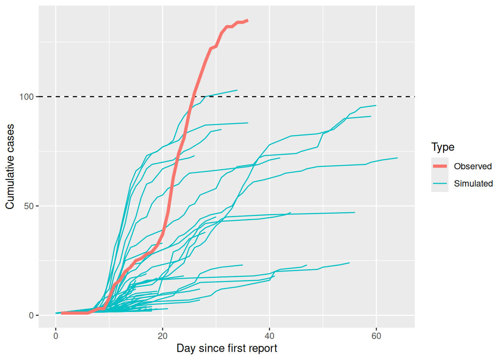
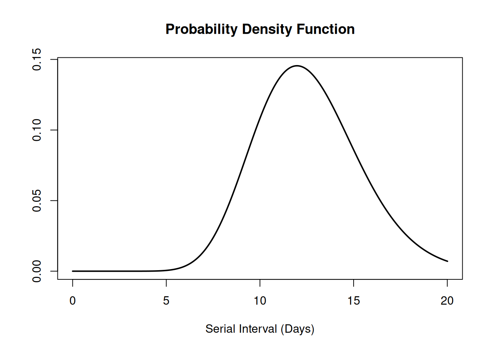
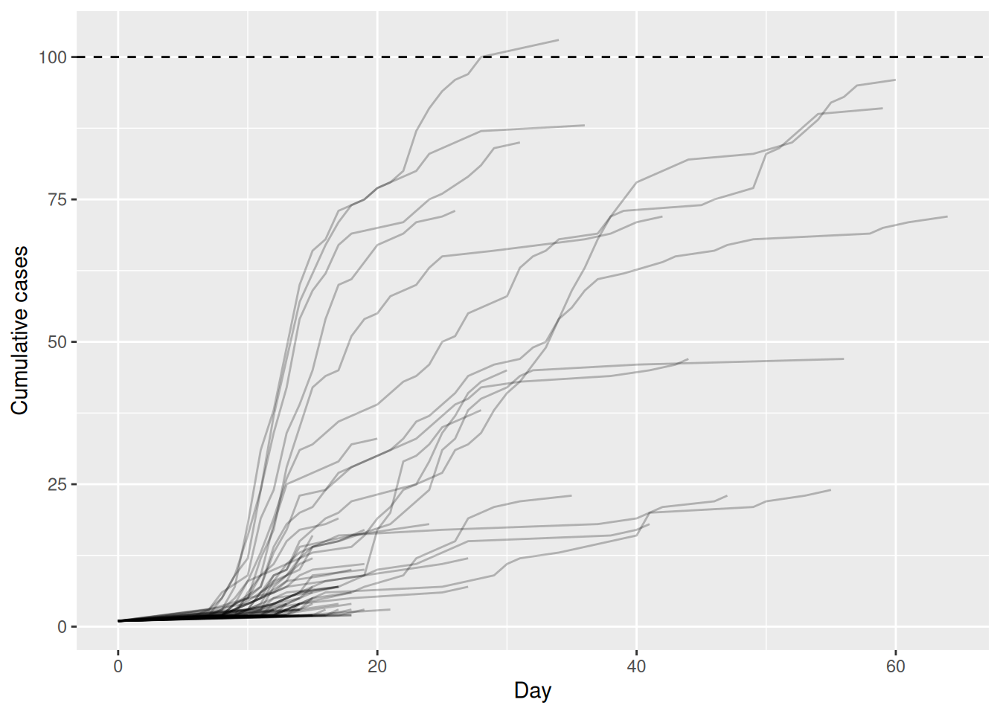
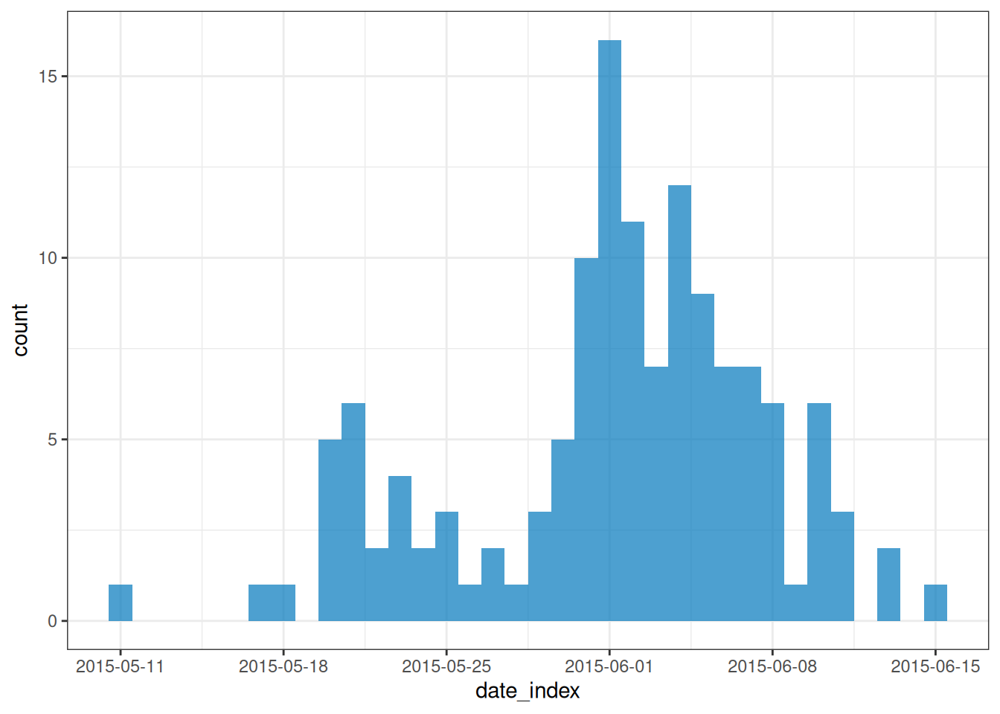
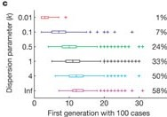
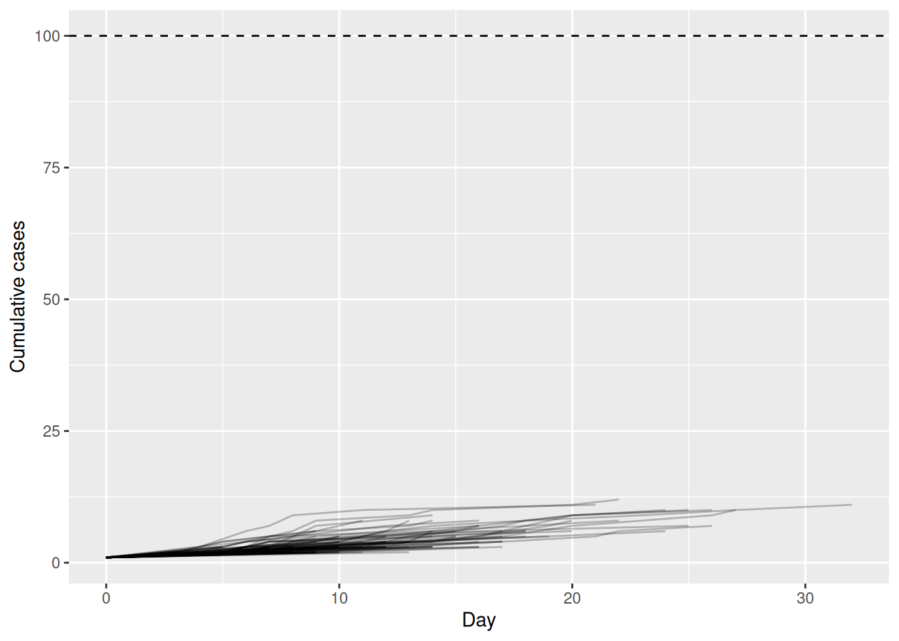
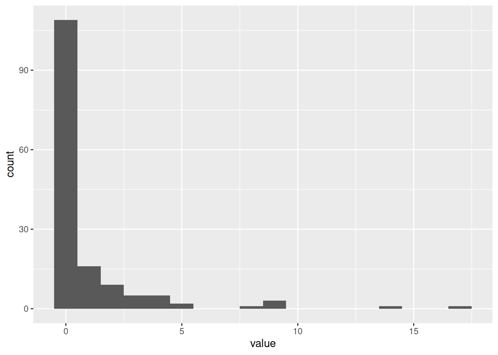
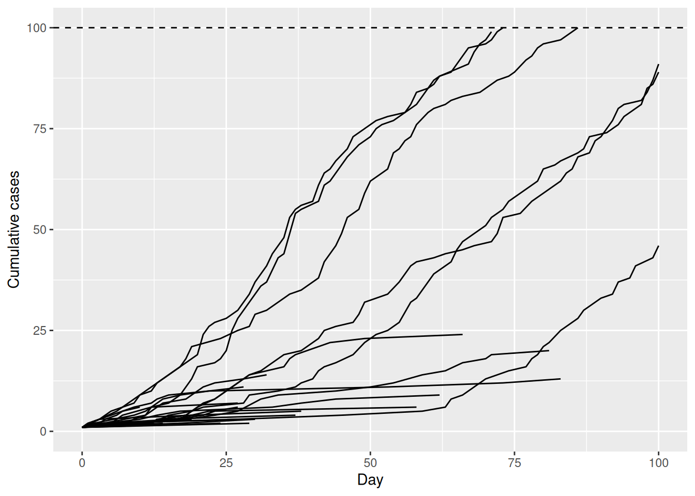

Simular cadeias de transmissão
NotaPerguntas
- Como podemos simular cadeias de transmissão com base nas características da infecção?
DicaObjetivos
- Estimar o potencial de grandes surtos após a introdução de um novo caso usando processos de ramificação com o
{epichains}.
ImportantePré-requisitos
Pré-requisitos
É recomendável se familiarizar com as seguintes dependências conceituais antes de realizar este tutorial:
Estatística: Distribuições de probabilidade comuns, incluindo Poisson e binomial negativa.
Teoria de epidemias: O número de reprodução, \(R\).
Pacotes de R instalados: {epichains}, {epiparameter}, {tidyverse}.
NotaDetalhes
Instale os pacotes se eles ainda não estiverem instalados (você pode configurar o espelho brasileiro do CRAN com options(repos = c(CRAN = "https://cran-r.c3sl.ufpr.br/"))):
if (!base::require("pak")) install.packages("pak")
pak::pak(c("epichains", "epiparameter", "tidyverse"))Se você encontrar alguma mensagem de erro, acesse a página principal de configuração.
Introdução
A variação individual na transmissão pode afetar tanto o potencial de uma epidemia se estabelecer em uma população quanto a facilidade de controle (Cori et al., 2017).
Uma maior variação reduz a probabilidade geral de um único novo caso causar um grande surto local, porque a maioria dos casos infecta poucos outros e indivíduos que geram um grande número de casos secundários são relativamente raros.
No entanto, se um “evento de superdisseminação” de fato ocorrer e o surto se estabelecer, essa variação pode tornar o surto mais difícil de controlar por meio de intervenções em massa (ou seja, intervenções generalizadas que assumem implicitamente que todos contribuem igualmente para a transmissão), porque alguns casos contribuem desproporcionalmente: um único caso não controlado pode gerar um grande número de casos secundários.
Por outro lado, a variação na transmissão pode oferecer oportunidades para intervenções direcionadas se os indivíduos que mais contribuem para a transmissão (devido a fatores biológicos ou comportamentais), ou os ambientes em que ocorrem “eventos de superdisseminação”, compartilharem características sociodemográficas, ambientais ou geográficas que possam ser definidas.
Como podemos quantificar o potencial de uma nova infecção causar um grande surto com base em seu número de reprodução \(R\) e na dispersão \(k\) de sua distribuição de casos secundários?
Neste episódio, usaremos o pacote {epichains} para simular cadeias de transmissão e estimar o potencial de grandes surtos após a introdução de um novo caso. Vamos utilizá-lo com funções do {epiparameter}, {dplyr} e {purrr}, portanto também carregando o pacote {tidyverse}:
library(epichains)
library(epiparameter)
library(tidyverse)
NotaChecklist
Os dois pontos duplos (::)
Os dois pontos duplos :: no R permitem que você chame uma função específica de um pacote sem carregar o pacote inteiro no ambiente atual. O pacote precisa estar instalado.
Por exemplo, dplyr::filter(data, condition) usa filter() do pacote {dplyr}.
Isso nos ajuda a lembrar as funções dos pacotes e a evitar conflitos de espaço de nomes (namespace).
Simulação de surtos não controlados
As epidemias de doenças infecciosas se propagam pelas populações quando uma cadeia de indivíduos infectados transmite a infecção a outros. Os processos de ramificação podem ser usados para modelar essa transmissão. Um processo de ramificação é um processo estocástico (ou seja, um processo aleatório que pode ser descrito por uma distribuição de probabilidade conhecida), no qual cada indivíduo infeccioso dá origem a um número aleatório de indivíduos na geração seguinte de infecção, começando com o caso índice na geração 1. A distribuição do número de casos secundários que cada indivíduo gera é chamada de distribuição de casos secundários (Azam & Funk, 2024).
O {epichains} fornece métodos para analisar e simular o tamanho (size) e a duração (length) de processos de ramificação com uma dada distribuição de casos secundários. O {epichains} implementa um modelo rápido e simples para simular cadeias de transmissão a fim de avaliar o risco epidêmico, projetar casos no futuro e avaliar intervenções que alterem \(R\).
NotaDiscussão
Tamanho e duração da cadeia
O tamanho (size) da cadeia de transmissão é definido como o número total de indivíduos infectados em todas as gerações de infecção, e
a duração (length) da cadeia de transmissão é o número de gerações desde o primeiro caso até o último caso no surto antes do término da cadeia.
O cálculo do tamanho inclui o primeiro caso, e o cálculo da duração contém a primeira geração em que o primeiro caso inicia a cadeia (veja a figura abaixo).

Para usar o {epichains}, precisamos conhecer (ou assumir) dois valores epidemiológicos fundamentais:
- a distribuição de casos secundários e
- o tempo de geração.
Você deve reconhecer esses dois parâmetros do tutorial Acessar distribuições de atraso epidemiológicas, onde introduzimos pela primeira vez o tempo de geração e o número de reprodução.
Obter a distribuição de casos secundários
Aqui assumimos que a distribuição de casos secundários do MERS segue uma distribuição binomial negativa, com valores de média (número de reprodução \(R\)) e dispersão \(k\) estimados a partir do linelist e dos dados de contato de mers_korea_2015 do pacote de R {outbreaks} no episódio anterior.
mers_offspring <- c(mean = 0.60, dispersion = 0.02)
NotaDistribuição de casos secundários para o epichains
Fornecemos uma distribuição de casos secundários para o {epichains} fazendo referência à função do R que gera valores aleatórios da distribuição desejada. Para uma distribuição binomial negativa, usamos rnbinom com seus argumentos correspondentes mu e size:
offspring_dist = rnbinom,
mu = mers_offspring["mean"],
size = mers_offspring["dispersion"],Internamente, o {epichains} sorteará um valor aleatório, dados os parâmetros, para simular o número de novas infecções a partir de um indivíduo infectado (transmissão subsequente).
# gerar um número aleatório dada a família de distribuição e seus parâmetros
# (execute esta linha muitas vezes para obter valores diferentes)
rnbinom(n = 1, mu = mers_offspring["mean"], size = mers_offspring["dispersion"])O manual de referência em ?rnbinom nos informa os argumentos específicos necessários.
NotaDetalhes
Distribuição Poisson e outras distribuições
O {epichains} pode aceitar qualquer função do R que gere números aleatórios, portanto os argumentos especificados mudarão dependendo da função do R utilizada. Para mais detalhes sobre a variedade de opções possíveis, consulte o manual de referência da função.
Por exemplo, suponha que queiramos usar uma distribuição Poisson para a distribuição de casos secundários. Primeiro, leia o argumento exigido no manual de referência de ?rpois. Segundo, especifique o parâmetro do argumento lambda, também conhecido como taxa ou média na literatura. No {epichains}, isso pode ter a seguinte forma:
offspring_dist = rpois,
lambda = mers_offspring["mean"],Neste exemplo, podemos especificar lambda = mers_offspring["mean"] porque o número médio de casos secundários gerados (ou seja, \(R\)) deve ser o mesmo independentemente da distribuição que assumimos. O que muda é a variância da distribuição e, consequentemente, o nível de variação na transmissão em nível individual. Quando o parâmetro de dispersão \(k\) se aproxima do infinito (\(k \rightarrow \infty\)) em uma distribuição binomial negativa, a variância é igual à média. Isso torna a distribuição Poisson convencional um caso especial da distribuição binomial negativa.
Obter o tempo de geração
A distribuição do intervalo serial é frequentemente utilizada para aproximar a distribuição do tempo de geração. Essa aproximação é comumente utilizada porque é mais fácil observar e aferir o início dos sintomas em cada caso do que o momento exato da infecção.
NotaDetalhes
Tempo de geração vs. intervalo serial

No entanto, o uso do intervalo serial como aproximação do tempo de geração é válido principalmente para doenças nas quais a infecciosidade começa após o início dos sintomas (Chung Lau et al., 2021). Nos casos em que a infecciosidade começa antes do início dos sintomas, os intervalos seriais podem assumir valores negativos, o que acontece com doenças com transmissão pré-sintomática (Nishiura et al., 2020).
Vamos usar o pacote {epiparameter} para acessar e usar o intervalo serial disponível para a doença MERS.
serial_interval <- epiparameter::epiparameter_db(
disease = "mers",
epi_name = "serial",
single_epiparameter = TRUE
)
plot(serial_interval, day_range = 0:25)
O intervalo serial para o MERS tem média de 12.6 dias e desvio padrão de 2.8 dias.
NotaTempo de geração para o epichains
Em cada etapa da simulação, o {epichains} sorteará valores de tempo de geração para cada nova infecção gerada a partir da distribuição de casos secundários. Com objetos da classe <epiparameter>, podemos usar a função de distribuição epiparameter::generate() para essa entrada.
# Na etapa um, o número de novas infecções é 2, então:
# gerar 2 valores aleatórios dada a distribuição do intervalo serial
generate(x = serial_interval, times = 2)[1] 14.60507 15.06471# Na etapa dois, o número de novas infecções é 6, então:
# gerar 6 valores aleatórios dada a distribuição do intervalo serial
generate(x = serial_interval, times = 6)[1] 12.522027 16.109812 14.195049 6.875113 15.432142 12.349850Como o valor fornecido em times vai variar a cada etapa, precisamos embutir generate() dentro de uma função. O {epichains} sorteará tantos valores aleatórios do tempo de geração quanto for o número de novas infecções naquela etapa. Isso terá a seguinte forma:
function(x) generate(x = serial_interval, times = x)Essa interface é semelhante à que o {cfr} utiliza para se vincular ao {epiparameter}. Leia a vinheta sobre trabalhar com distribuições de atraso para obter mais contexto.
ImportantePara o instrutor
A função para gerar números aleatórios a partir de um objeto da classe <epiparameter> também pode aceitar esta notação:
as.function(x = serial_interval, func_type = "generate")Simular uma única cadeia
Agora estamos preparados para usar a função simulate_chains() do {epichains} para criar uma cadeia de transmissão:
epichains::simulate_chains(
n_chains = 1,
statistic = "size",
offspring_dist = rnbinom,
mu = mers_offspring["mean"],
size = mers_offspring["dispersion"],
generation_time = function(x) generate(x = serial_interval, times = x)
)A função simulate_chains() exige três conjuntos de argumentos no mínimo:
- controles de simulação (
n_chainsestatistic), - distribuição de casos secundários (
offspring_diste os parâmetros da distribuição exigidos), e - tempo de geração (
generation_time).
Nas linhas acima, descrevemos como especificar a distribuição de casos secundários e o tempo de geração. Os controles de simulação incluem pelo menos dois argumentos:
n_chains, que define o número de cadeias de transmissão a serem simuladas estatistic, que define uma estatística da cadeia a ser acompanhada (seja"size"ou"length") como critério de parada para cada cadeia em simulação.
NotaCritérios de parada
Este é um recurso personalizável do {epichains}. Por padrão, as simulações de processos de ramificação terminam quando se extinguem. Para cadeias de transmissão de longa duração, você pode adicionar o argumento stat_threshold em simulate_chains().
Por exemplo, se definirmos um critério de parada para statistic = "size" com stat_threshold = 500, nenhum descendente adicional será produzido após uma cadeia atingir o tamanho de 500.
A saída de simulate_chains() cria um objeto da classe <epichains>, que podemos analisar com mais detalhes no R.
Simular múltiplas cadeias
Podemos usar simulate_chains() para criar múltiplas cadeias e aumentar a probabilidade de simular projeções de surtos não controlados, dada uma distribuição de casos secundários sobredispersa.
Precisamos especificar um elemento adicional:
set.seed(<integer>)é uma função usada para inicializar um gerador de números pseudoaleatórios. Ao especificar um valor de semente (o<integer>), você garante que a sequência de números produzida por funções aleatórias subsequentes, comornorm()ousimulate_chains(), seja idêntica toda vez que o código for executado.
Com essa configuração, cada cadeia representará um caso inicial. Esses casos por cadeia são independentes, isolados e sem interações. Isso significa que cada cadeia terá seu próprio contingente de suscetíveis, que você pode configurar usando os argumentos pop ou percent_immune.
Agora, vamos simular 100 cadeias de transmissão:
# Execute todo este chunk junto para que o set.seed() funcione!
# Definir a semente para o gerador de números pseudoaleatórios
set.seed(33)
multiple_epichains <- epichains::simulate_chains(
n_chains = 100,
statistic = "size",
offspring_dist = rnbinom,
mu = mers_offspring["mean"],
size = mers_offspring["dispersion"],
generation_time = function(x) generate(x = serial_interval, times = x)
)Você pode inspecionar o tamanho total de cada cadeia simulada, equivalente ao número acumulado de casos por cadeia, aplicando summary() ao objeto da classe <epichains>:
summary(multiple_epichains)`epichains_summary` object
[1] 1 1 1 1 1 1 1 1 1 1 1 1 1 1 1 1 1 1
[19] 7 1 1 1 1 1 1 1 1 1 1 14 1 2 1 1 2 1
[37] 1 1 1 1 1 1 1 1 1 1 1 1 1 1 1 1 1 1
[55] 1 1 1 1 512 1 1 1 1 1 104 1 1 1 1 1 1 1
[73] 1 1 1 1 1 1 1 1 1 4 1 1 1 1 1 1 1 1
[91] 1 1 1 1 1 1 1 1 1 1
Simulated sizes:
Max: 512
Min: 1Podemos contar visualmente quantas cadeias alcançam mais de 100 casos infectados, além das contagens máxima e mínima.
DicaDesafio
Use a última execução de epichains::simulate_chains() para simular múltiplas cadeias. Altere o argumento statistic de "size" para "length". Execute a função summary().
- Que característica da cadeia essa saída mostra?
NotaDica
Se precisar de ajuda, volte à caixa de chamada “Tamanho e duração da cadeia” do início.
NotaDiscussão
Ler a saída do epichains
Para explorar o formato de saída do objeto da classe <epichains> com o nome multiple_epichains, vamos observar a cadeia simulada (chain) número 30.
NotaSolução
O objeto epichains
Vamos usar dplyr::filter() para isso:
chain_to_observe <- 30#### obter resumo do epichain ------------------------------------------------
multiple_epichains %>%
dplyr::filter(chain == chain_to_observe)`<epichains>` object
< epichains head (from first known infector) >
chain infector infectee generation time
2 30 1 2 2 14.100967
3 30 1 3 2 10.640301
4 30 1 4 2 15.608764
5 30 1 5 2 13.515424
6 30 1 6 2 9.967474
7 30 1 7 2 9.376222
Number of chains: 100
Number of infectors (known): 3
Number of generations: 3
Use `as.data.frame(<object_name>)` to view the full output in the console.Essa saída contém duas partes:
- Uma impressão com
head()dos pares infector-infectado a partir do primeiro infector conhecido. - Um rodapé de resumo, o trecho de texto exibido na parte inferior:
Number of infectors (known): 3
Number of generations: 3A cadeia simulada (chain) número 30 possui três infectores conhecidos e três gerações. Esses números ficam mais visíveis ao imprimir os objetos <epichains> como um data frame (ou <tibble>).
NotaSolução
O data frame do epichains
#### data frame de infector-infectado ----------------------------------------
multiple_epichains %>%
dplyr::filter(chain == chain_to_observe) %>%
dplyr::as_tibble()# A tibble: 14 × 5
chain infector infectee generation time
<int> <dbl> <dbl> <int> <dbl>
1 30 NA 1 1 0
2 30 1 2 2 14.1
3 30 1 3 2 10.6
4 30 1 4 2 15.6
5 30 1 5 2 13.5
6 30 1 6 2 9.97
7 30 1 7 2 9.38
8 30 1 8 2 11.5
9 30 4 9 3 31.0
10 30 4 10 3 25.3
11 30 4 11 3 28.5
12 30 4 12 3 29.6
13 30 4 13 3 25.9
14 30 4 14 3 24.6 A cadeia 30 nos conta uma história:
“Na primeira geração de transmissão em time = 0, um indivíduo (ID = NA) infectou o indivíduo com ID = 1. O indivíduo ID = 1 é o primeiro infector conhecido.
“Depois, na segunda geração de transmissão, o indivíduo ID = 1 infectou sete indivíduos, de ID = 2 a ID = 8. Essas infecções ocorreram no tempo (time) entre o dia 9 e o dia 15, após a primeira infecção conhecida.
“Mais tarde, na terceira geração de transmissão, o indivíduo ID = 4 infectou seis novos indivíduos, de ID = 9 a ID = 14. Essas infecções ocorreram no tempo (time) entre o dia 24 e o dia 31, após a primeira infecção conhecida.”
NotaSolução
Um data frame de infectados
O data frame de saída reúne indivíduos infectados (infectees) como a unidade de observação:
- Cada infectado tem um “ID” em
infectee. - Cada infectado que atuou como infector é registrado na coluna
infectorusando o seu “id” deinfectee. - Cada infectado foi infectado em uma geração (
generation) e em um momento contínuo (time) específicos. - O número da simulação é registrado na coluna
chain.
Nota: O Number of infectors (known) inclui o indivíduo ID = NA na coluna infector. Isso se refere ao infector especificado como caso índice (no argumento n_chains), que iniciou a cadeia de transmissão para o infectado de ID = 1, em generation = 1 e time = 0.
Iterar simulações
Como vimos antes, podemos configurar a simulação de múltiplas cadeias simplesmente aumentando o número de cadeias (por exemplo, de n_chains = 1 para n_chains = 100). No entanto, se precisarmos assumir que cada caso inicial começa (a ser infeccioso) em um momento diferente, isso só pode ser configurado em uma única função de simulação. Assim, precisamos iterar múltiplas vezes sobre uma configuração específica de simulação de cadeia para aumentar a probabilidade de simular projeções de surtos não controlados. A tabela a seguir compara as alternativas:
| Execuções da simulação | Casos iniciais | Tempo de início (t0) |
Uso |
|---|---|---|---|
| Uma | 1 | Mesmo | epichains::simulate_chains() com n_chains = 1 |
| Múltiplas (100, p. ex.) | 1 | Mesmo | epichains::simulate_chains() com n_chains = 100 |
| Múltiplas (100, p. ex.) | Mais de um | Diferente | Iterar 100 vezes usando purrr::map() sobre epichains::simulate() |
A principal diferença da terceira configuração é o argumento t0 de epichains::simulate_chains(). O argumento t0 define o momento inicial de cada caso inicial por cadeia.
Nota
Um exemplo de uso de iteração está disponível na vinheta do {epichains} sobre Projeção da incidência de doenças infecciosas: um exemplo com COVID-19. O objetivo é simular a importação de 13 casos em diferentes momentos no tempo.
epichains::covid19_sa[1:5, ] %>%
dplyr::mutate(start_time = date - min(date))# A tibble: 5 × 3
date cases start_time
<date> <int> <drtn>
1 2020-03-05 1 0 days
2 2020-03-07 1 2 days
3 2020-03-08 1 3 days
4 2020-03-09 4 4 days
5 2020-03-11 6 6 days Em vez de termos 100 cadeias começando no mesmo Dia 0 (t0 = 0, por padrão), cada simulação criará cadeias que começam em um momento diferente no tempo. Ela considerará o dia 2020-03-05 como Dia 0. A primeira cadeia começa no dia 0, uma no dia 2, uma no dia 3, quatro no dia 4 e seis no dia 6. O argumento t0 terá esta estrutura:
t0 <- c(0, 2, 3, rep(4, 4), rep(6, 6))
t0 [1] 0 2 3 4 4 4 4 6 6 6 6 6 6Para aumentar a probabilidade de simular projeções de surtos não controlados, esse mesmo cenário precisa ser iterado 100 vezes. Isso nos ajudará a fornecer uma projeção com incerteza.
Nesta seção, demonstraremos como construir a iteração com o {epichains} passo a passo. Vamos replicar convenientemente a mesma simulação anterior: 100 cadeias de transmissão com 1 caso inicial cada, começando no dia 0 (t0 = 0). Mas, em vez de usar n_chains = 100, iteraremos 100 vezes sobre a simulação de 1 cadeia de transmissão com 1 caso inicial começando no dia 0 (n_chains = 1).
Precisamos especificar dois elementos adicionais:
number_simulations, que define o número de simulações a executar.initial_casesdefine o número de casos iniciais a fornecer ao argumenton_chainsexplicado nas linhas acima.
# Número de execuções da simulação
number_simulations <- 100
# Número de casos iniciais
initial_cases <- 1number_simulations e initial_cases são convenientemente armazenados em objetos para facilitar o reuso posterior no fluxo de trabalho.
NotaChecklist
Iteração usando purrr
A iteração visa realizar a mesma ação em diferentes objetos repetidamente.
Aprenda a usar as funções principais do {purrr}, como map(), no tutorial em vídeo do YouTube How to purrr de Equitable Equations.
Ou, se você utilizava anteriormente a família de funções *apply, consulte a vinheta do pacote sobre purrr e base R, que compartilha as principais diferenças, traduções diretas e exemplos.
Para obter múltiplas cadeias, devemos aplicar a função simulate_chains() a cada cadeia definida por uma sequência de números de 1 a 100.
Notapurrr e epichains
Primeiro, vamos esboçar como usamos purrr::map() com epichains::simulate_chains(). A função map() exige dois argumentos:
.x, com um vetor de números, e.f, uma função para iterar sobre cada valor do vetor.
O bloco de código abaixo
# etapas:
# - purrr::map() executará 100 vezes a function(sim).
# - seq_len() cria um vetor com uma sequência de números (IDs de simulação de 1 a 100) e
# - function(sim) itera o {epichains} para cada número de ID de simulação, depois
# - dplyr::mutate() adiciona uma coluna à saída do <epichains> com o número de ID da simulação.
# - purrr::list_rbind() combina todas as saídas da classe list (para cada ID de simulação) em um único data frame.
purrr::map(
.x = seq_len(number_simulations),
.f = function(sim) {
epichains::simulate_chains(...) %>% # <-- {epichains}
dplyr::mutate(simulation_id = sim)
}
) %>%
purrr::list_rbind()
# pseudocódigo: não execute.O elemento sim é incluído para registrar o número da iteração (ID da simulação) como uma nova coluna na saída do <epichains>. A função purrr::list_rbind() tem o objetivo de combinar todas as saídas em lista do map().
Por que um ponto (.) como prefixo antes dos argumentos x e f? No livro princípios de design do tidyverse, há um capítulo sobre o prefixo de ponto!
Agora estamos preparados para usar purrr::map() para simular repetidamente a partir de simulate_chains() e armazenar em um vetor de 1 a 100:
set.seed(33)
simulated_chains_map <-
purrr::map(
.x = seq_len(number_simulations),
.f = function(sim) {
epichains::simulate_chains(
n_chains = initial_cases,
statistic = "size",
offspring_dist = rnbinom,
mu = mers_offspring["mean"],
size = mers_offspring["dispersion"],
generation_time = function(x) generate(x = serial_interval, times = x)
) %>%
dplyr::mutate(simulation_id = sim)
}
) %>%
purrr::list_rbind()Uma limitação da saída da iteração é que, para resumir o resultado, não podemos usar summary(<epichains>).
simulated_chains_map %>%
dplyr::count(simulation_id) %>%
dplyr::pull(n) [1] 1 1 1 1 1 1 1 1 1 1 1 1 1 1 9 1 1 1
[19] 1 1 1 1 113 1 1 1 1 1 1 1 1 1 19 1 1 1
[37] 1 1 1 1 1 1 1 1 1 1 1 1 1 1 1 1 1 1
[55] 1 1 1 1 1 1 1 1 1 1 1 1 1 1 22 1 1 1
[73] 1 1 1 1 1 1 1 1 1 1 1 1 1 1 1 1 1 1
[91] 1 1 1 1 1 1 1 1 1 1Visualizar múltiplas cadeias
Para aumentar a probabilidade de simular projeções de surtos não controlados, dada uma distribuição de casos secundários sobredispersa, vamos simular 1.000 cadeias de transmissão com 1 caso inicial cada, começando no dia 0.
Executaremos uma simulação com múltiplas réplicas, sem iteração para esta seção:
set.seed(33)
multiple_epichains <- epichains::simulate_chains(
n_chains = 1000,
statistic = "size",
offspring_dist = rnbinom,
mu = mers_offspring["mean"],
size = mers_offspring["dispersion"],
generation_time = function(x) generate(x = serial_interval, times = x)
)Para visualizar as cadeias simuladas, precisamos de algum pré-processamento:
- Vamos usar o
{dplyr}para obter números de tempo arredondados, assemelhando-se a dias de vigilância. - Contar os casos diários em cada simulação (por
chain). - Calcular o número acumulado de casos dentro de uma simulação.
# agregado diário de casos
aggregate_chains <- multiple_epichains %>%
# usar a saída em data.frame do objeto <epichains>
dplyr::as_tibble() %>%
# obter o número arredondado (dia) dos tempos de infecção
dplyr::mutate(day = ceiling(time)) %>%
# contar o número de casos incidentes diários em cada cadeia
dplyr::count(chain, day, name = "cases_new") %>%
# calcular o número acumulado de casos para cada cadeia
dplyr::group_by(chain) %>%
dplyr::mutate(cases_cumsum = cumsum(cases_new)) %>%
dplyr::ungroup()Para compreender melhor a saída que acabamos de produzir, vamos imprimir mais linhas dela. As colunas relevantes são:
days: o intervalo de tempo discretizado da simulação (tempo contínuo agrupado em dias)cases_new: o número de novos casos incidentes naquele diacases_cumsum: a soma acumulada de casos por dia, calculada dentro de cada cadeia de transmissão
# Imprimir algumas cadeias para entender melhor a saída
aggregate_chains %>%
arrange(chain) %>%
print(n=50)Antes do gráfico, vamos criar uma tabela de resumo com a duração de tempo total e o tamanho de cada cadeia. Podemos usar o “combo” do {dplyr} formado por group_by(), summarise() e ungroup():
# Resumir a duração e o tamanho das cadeias
summary_chains <-
aggregate_chains %>%
dplyr::group_by(chain) %>%
dplyr::summarise(
# duração
day_max = max(day),
# tamanho
cases_total = max(cases_cumsum)
) %>%
dplyr::ungroup()
summary_chains# A tibble: 1,000 × 3
chain day_max cases_total
<int> <dbl> <int>
1 1 0 1
2 2 0 1
3 3 0 1
4 4 0 1
5 5 0 1
6 6 0 1
7 7 0 1
8 8 0 1
9 9 0 1
10 10 0 1
# ℹ 990 more rowsAgora estamos preparados para usar o pacote {ggplot2}:
# Visualizar cadeias de transmissão por casos acumulados
ggplot() +
# criar trajetórias de cadeias agrupadas
geom_line(
data = aggregate_chains,
mapping = aes(
x = day,
y = cases_cumsum,
group = chain
),
color = "black",
alpha = 0.25,
show.legend = FALSE
) +
# definir um limiar de 100 casos
geom_hline(aes(yintercept = 100), lty = 2) +
labs(
x = "Day",
y = "Cumulative cases"
)
Embora a maioria das introduções de 1 caso índice não gere casos secundários (N = 934) ou a maioria dos surtos se extinga rapidamente (duração mediana de 17 e tamanho mediano de 5.5), apenas 1 trajetórias epidêmicas entre as 100 simulações (1%) conseguem atingir mais de 100 casos infectados. Esse achado é particularmente notável porque o número de reprodução \(R\) é menor que 1 (média da distribuição de casos secundários de 0.6), mas, dado um parâmetro de dispersão da distribuição de casos secundários de 0.02, ele demonstra o potencial de surtos explosivos da doença MERS.
Podemos contar quantas cadeias atingiram o limiar de 100 casos usando funções do {dplyr}. Essa saída deve nos fornecer resultados equivalentes aos de summary(multiple_epichains):
# número de cadeias que atingiram o limiar de 100 casos
summary_chains %>%
dplyr::filter(cases_total > 100)# A tibble: 1 × 3
chain day_max cases_total
<int> <dbl> <int>
1 65 34 103
NotaDetalhes
Casos observados vs. cadeias simuladas
Vamos sobrepor o número acumulado de casos observados usando o objeto de linelist do conjunto de dados mers_korea_2015 do pacote de R {outbreaks}. Para preparar o conjunto de dados de forma que possamos plotar os casos totais diários ao longo do tempo, usamos o {incidence2} para converter o linelist em um objeto <incidence2>, completando as datas faltantes da série temporal com complete_dates():
library(outbreaks)
mers_cumcases <- mers_korea_2015$linelist %>%
# fluxo de trabalho do incidence2
incidence2::incidence(date_index = "dt_onset") %>%
incidence2::complete_dates() %>%
# manipulação de dados usando {dplyr}
dplyr::mutate(count_cumsum = cumsum(count)) %>%
tibble::rownames_to_column(var = "day") %>%
dplyr::mutate(day = as.numeric(day))Use plot() para gerar um gráfico de incidência:
# plotar o objeto incidence2
plot(mers_cumcases)
Ao plotar o número observado de casos acumulados do surto de síndrome respiratória do Oriente Médio (MERS) na Coreia do Sul em 2015 ao lado das cadeias simuladas anteriormente, vemos que os casos observados seguiram uma trajetória que é consistente com a dinâmica explosiva simulada do surto (o que faz sentido, já que a simulação utiliza parâmetros baseados nesse surto específico).

Quando aumentamos o parâmetro de dispersão de \(k = 0.01\) para \(k = \infty\) — e, portanto, reduzimos a variação na transmissão em nível individual — e assumimos um número de reprodução fixo \(R = 1.5\), a proporção de surtos simulados que atingiram o limiar de 100 casos aumenta. Isso ocorre porque os surtos simulados passam a ter uma dinâmica mais consistente e regular, em vez do alto nível de variabilidade observado anteriormente.

NotaPara se aprofundar
Projeções de disseminação precoce
Na fase inicial da epidemia, você pode usar o {epichains} para aplicar um modelo de processos de ramificação a fim de projetar o número de casos futuros. Mesmo que o modelo leve em conta a aleatoriedade na transmissão e a variação no número de casos secundários, podem existir características locais adicionais que não consideramos. A análise de previsões iniciais feitas para a COVID em diferentes países usando essa estrutura de modelo constatou que as previsões eram frequentemente excessivamente confiantes (overconfident) (Pearson et al., 2020). Isso provavelmente ocorreu porque o modelo em tempo real não incluiu todas as mudanças na distribuição de casos secundários que estavam ocorrendo em nível local como resultado de mudanças comportamentais e medidas de controle. Você pode ler mais sobre a importância do contexto local em modelos de COVID-19 em Eggo et al. (2020).
Convidamos você a ler a vinheta sobre Projetar a incidência de doenças infecciosas: um exemplo com COVID-19 para saber mais sobre como fazer previsões usando o {epichains}.
Desafios
DicaDesafio
Potencial de grande surto de Monkeypox
Avalie o potencial de um novo caso de Monkeypox (Mpox) gerar um grande surto explosivo.
- Simule 1.000 cadeias de transmissão com 1 caso inicial cada, começando no dia 0.
- Use o pacote apropriado para acessar dados de atraso de surtos anteriores.
- Quantas trajetórias simuladas alcançam mais de 100 casos infectados?
NotaDica
Com o {epiparameter}, você pode acessar e usar distribuições de casos secundários e de atraso de surtos anteriores de Ebola.
library(epiparameter)
library(tidyverse)
epiparameter::epiparameter_db(epi_name = "offspring") %>%
epiparameter::parameter_tbl() %>%
dplyr::count(disease, epi_name)# Parameter table:
# A data frame: 6 × 3
disease epi_name n
<chr> <chr> <int>
1 Ebola Virus Disease offspring distribution 1
2 Hantavirus Pulmonary Syndrome offspring distribution 1
3 Mpox offspring distribution 1
4 Pneumonic Plague offspring distribution 1
5 SARS offspring distribution 2
6 Smallpox offspring distribution 4epiparameter::epiparameter_db(epi_name = "serial interval") %>%
epiparameter::parameter_tbl() %>%
dplyr::count(disease, epi_name)# Parameter table:
# A data frame: 6 × 3
disease epi_name n
<chr> <chr> <int>
1 COVID-19 serial interval 4
2 Ebola Virus Disease serial interval 4
3 Influenza serial interval 1
4 MERS serial interval 2
5 Marburg Virus Disease serial interval 2
6 Mpox serial interval 5Além disso, dado que você precisa apenas de uma cadeia por iteração começando no mesmo dia, pode não ser necessário usar iteração para este exercício.
ImportantePara o instrutor
# carregar pacotes --------------------------------------------------------
library(epiparameter)
library(tidyverse)
# atrasos -----------------------------------------------------------------
mpox_offspring_epiparam <- epiparameter::epiparameter_db(
disease = "mpox",
epi_name = "offspring",
single_epiparameter = TRUE
)
mpox_offspring <- epiparameter::get_parameters(mpox_offspring_epiparam)
mpox_serialint <- epiparameter::epiparameter_db(
disease = "mpox",
epi_name = "serial interval",
single_epiparameter = TRUE
)
# iterar ------------------------------------------------------------------
# Definir a semente para o gerador de números pseudoaleatórios
set.seed(33)
simulated_chains_mpox <- epichains::simulate_chains(
n_chains = 1000,
statistic = "size",
offspring_dist = rnbinom,
mu = mpox_offspring["mean"],
size = mpox_offspring["dispersion"],
generation_time = function(x) generate(x = mpox_serialint, times = x)
)
# visualizar --------------------------------------------------------------
# agregado diário de casos
simulated_chains_mpox_day <- simulated_chains_mpox %>%
# usar a saída em data.frame do objeto <epichains>
as_tibble() %>%
# Contar o número diário de casos em cada cadeia
mutate(day = ceiling(time)) %>%
count(chain, day, name = "cases") %>%
# Calcular o número acumulado de casos para cada cadeia
group_by(chain) %>%
mutate(cumulative_cases = cumsum(cases)) %>%
ungroup()
# Visualizar cadeias de transmissão por casos acumulados
simulated_chains_mpox_day %>%
# Criar trajetórias de cadeias agrupadas
ggplot(aes(x = day, y = cumulative_cases, group = chain)) +
geom_line(color = "black", alpha = 0.25, show.legend = FALSE) +
# Definir um limiar de 100 casos
geom_hline(aes(yintercept = 100), lty = 2) +
labs(x = "Day", y = "Cumulative cases")
Assumindo um surto de Monkeypox com \(R\) = 0.32 e \(k\) = 0.58, não há nenhuma trajetória entre as 1.000 simulações que alcance mais de 100 casos infectados. Em comparação com o MERS (\(R\) = 0.6 e \(k\) = 0.02).
NotaDica
Avaliação de risco epidêmico levando em conta o superspreading
Com o {superspreading}, você pode obter soluções numéricas para processos que o {epichains} resolve usando processos de ramificação. Convidamos você a ler a vinheta do {superspreading} sobre Risco epidêmico e responder a:
- Qual é a probabilidade de um patógeno recém-introduzido causar um grande surto?
- Qual é a probabilidade de uma infecção, por acaso, não se estabelecer após a(s) introdução(ões) inicial(is)?
- Qual é a probabilidade de o surto ser contido?
Verifique como essas estimativas variam de forma não linear em relação ao número médio de reprodução \(R\) e à dispersão \(k\) de uma dada doença.
DicaDesafio
A partir de uma distribuição de casos secundários
Christian Althaus, 2015 reutilizou dados publicados por Faye et al., 2015 (Figura 2) sobre a árvore de transmissão da doença pelo vírus Ebola em Conacri, Guiné, em 2014.
Usando os dados na aba de dica:
- Estime a distribuição de casos secundários a partir dos dados de casos secundários.
- Em seguida, estime o potencial de grandes surtos a partir desses dados, simulando 100 execuções com um caso inicial.
- Imprima o resumo do objeto da classe
<epichains>. Isso deve nos ajudar a contar quantas cadeias atingem um tamanho (size) de mais de 100 casos infectados.
Para obter resultados reproduzíveis, use set.seed(645).
NotaDica
Código com os dados da árvore de transmissão redigido por Christian Althaus, 2015:
# Número de indivíduos nas árvores
n <- 152
# Número de casos secundários para todos os indivíduos
c1 <- c(1, 2, 2, 5, 14, 1, 4, 4, 1, 3, 3, 8, 2, 1, 1,
4, 9, 9, 1, 1, 17, 2, 1, 1, 1, 4, 3, 3, 4, 2,
5, 1, 2, 2, 1, 9, 1, 3, 1, 2, 1, 1, 2)
c0 <- c(c1, rep(0, n - length(c1)))
c0 %>%
enframe() %>%
ggplot(aes(value)) +
geom_histogram(binwidth = 1)
Desafio opcional:
- Reproduza a Figura (B) de Christian Althaus, 2015 com a saída da simulação.
ImportantePara o instrutor
# carregar pacotes ------------------------
library(epichains)
library(epiparameter)
library(fitdistrplus)
library(tidyverse)# ajustar uma distribuição binomial negativa ------------------------------
# Ajuste de uma distribuição binomial negativa ao número de casos secundários
fit.cases <- fitdistrplus::fitdist(c0, "nbinom")
fit.casesFitting of the distribution ' nbinom ' by maximum likelihood
Parameters:
estimate Std. Error
size 0.1814260 0.03990278
mu 0.9537995 0.19812301# parâmetros do intervalo serial ------------------------------------------
ebola_serialinter <- epiparameter::epiparameter_db(
disease = "ebola",
epi_name = "serial interval",
single_epiparameter = TRUE
)
# simular trajetórias de surto --------------------------------------------
# Definir a semente para o gerador de números pseudoaleatórios
set.seed(645)
sim_multiple_chains <- epichains::simulate_chains(
n_chains = 100,
statistic = "size",
offspring_dist = rnbinom,
mu = fit.cases$estimate["mu"],
size = fit.cases$estimate["size"],
generation_time = function(x) generate(x = ebola_serialinter, times = x)
)
# resumir -----------------------------------------
summary(sim_multiple_chains)`epichains_summary` object
[1] 9 1 2 1 1 4 1 20 14 1 1 131 1 2 1
[16] 1 7 1 2 2889 1 1 1 13 3 1 1 1 1 1
[31] 5 6 1 1 1 1 1 1 1 1 2 1 1 2 1
[46] 1 1 1 1 1 1 1 1 1 335 1 11 3 24 6
[61] 1 1 1 1 1 1 1 1 1 1 1 1 1 1 111
[76] 1 1 1 1 1 1 2 1 544 1 1 1 3 1 2
[91] 6 1 1 1 1 1 1 1 2091 1
Simulated sizes:
Max: 2889
Min: 1# visualizar ---------------------------------------
sim_chains_aggregate <-
sim_multiple_chains %>%
# usar a saída em data.frame do objeto <epichains>
as_tibble() %>%
# Contar o número diário de casos em cada cadeia
mutate(day = ceiling(time)) %>%
count(chain, day, name = "cases") %>%
# Calcular o número acumulado de casos para cada cadeia
group_by(chain) %>%
mutate(cumulative_cases = cumsum(cases)) %>%
ungroup()
sim_chains_aggregate %>%
# Criar trajetórias de cadeias agrupadas
ggplot(aes(x = day, y = cumulative_cases, group = chain)) +
geom_line() +
# Definir um limiar de 100 casos
geom_hline(aes(yintercept = 100), lty = 2) +
ylim(0, 100) +
xlim(0, 100) +
labs(x = "Day", y = "Cumulative cases")
Notavelmente, mesmo com R0 menor que 1 (R = 0.95), podemos ter surtos potencialmente explosivos. A variação observada na infecciosidade individual no Ebola significa que, embora a probabilidade de extinção seja alta, novos casos índice também têm o potencial de ressurgimento explosivo da epidemia.
NotaPontos-chave
- Use o
{epichains}para simular o potencial de grandes surtos de doenças com distribuições de casos secundários sobredispersas.